Scouting from the broadcast video alone.
Cyber-Scout watches an FRC event on The Blue Alliance. When a match video appears, it tracks all six robots and every FUEL ball, works out which robot is which team from the bumper numbers, reconstructs every shot, and turns it into a plan for your next match. Nobody has to sit in the stands with a tablet.
Open source (MIT). Runs on your team's own computer. Built for 2026 REBUILT.
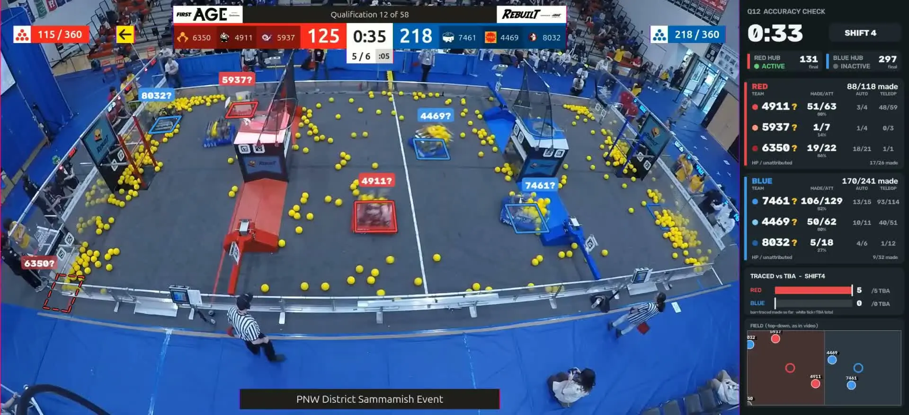
From a played match to a queue card, untouched.
Each match takes about 3 to 4 minutes on a GPU, starting as soon as its video is up. The only manual step is setting up a venue's camera once, about 15 minutes.
Notice the match
Polls The Blue Alliance for results and records the event livestream, cutting each match as its final buzzer sounds.
fast scores before TBA postsFind the camera
Downloads the overhead "Wide" video and checks the camera pose against AprilTags and the centre line, re-solving it if someone bumped it.
pixels to field metresTrack the robots
A YOLO robot detector at 30 frames per second, stitched into field-space paths with the tracker from autoscout.
six paths per matchRead the bumpers
OCR reads bumper numbers; one integer program assigns paths to the six teams. Every frame gets a confidence; low-confidence stretches are set aside, never guessed.
who is who, frame by frameRebuild every shot
Yellow FUEL in flight becomes a 3D arc: shooter, launch point, made, missed or pass, period and hub state, checked against TBA's per-period counts.
shots, intakes, defensePlan the next match
Ratings, Monte-Carlo predictions, a queue card for each of your remaining matches, rank projections, alliance selection odds.
the pages your strategist reads
Everything is replayable: snapshots every 30 minutes let you see the event "as of" any moment, using only results posted before then.
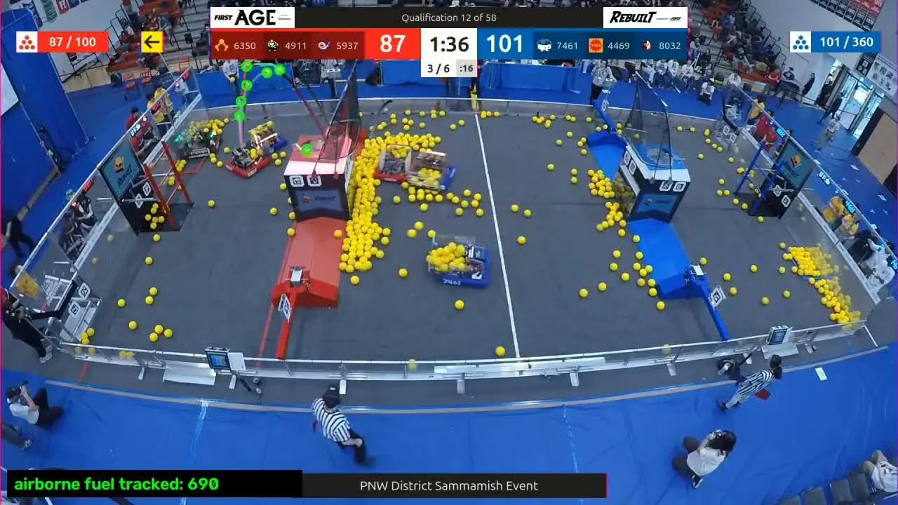
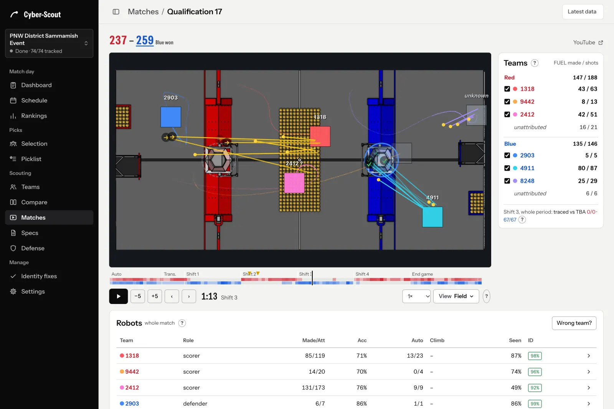
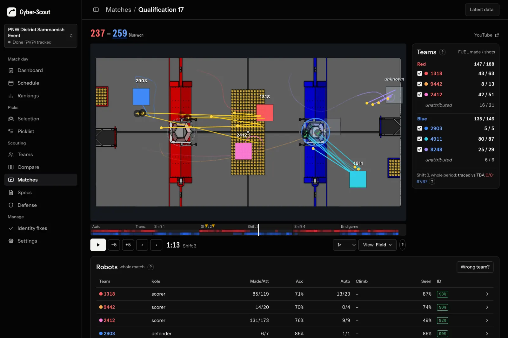
What your drive team reads before queueing.
The Dashboard turns the tracking into a six-line queue card for your next match: the win chance, what winning auto does to your hub shifts, who to defend, when and where, and the ranking-point line.


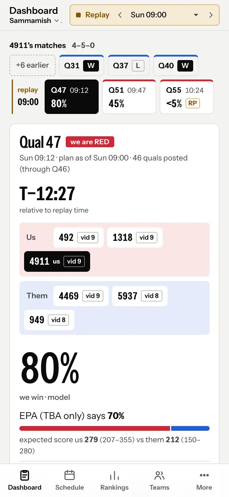
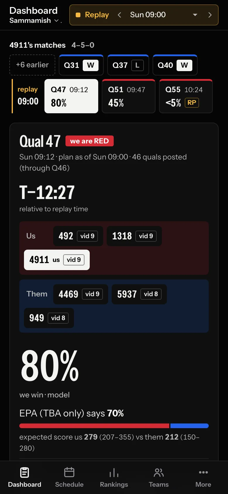
- Match plans and the queue card
- A plan for every remaining match of your team. When a match is nearly decided, the card switches to the bonus ranking point that is closest to a coin flip.
- Selection
- Simulates the rest of the quals, the draft and the playoffs: each team's chance to captain or be picked, "if they take us" re-runs, and pitch cards.
- Picklist
- One shared list per event. Strategists edit it, everyone signed in sees it, and edits made offline are sent when you reconnect.
- Defense library
- Every detected defense episode, measured against undefended windows of the same scorer, so you know which effects are real and which are guesses.
- Rankings and district points
- Projected ranks, district points computed by the official rules, and your odds of reaching the District Championship.
- Team pages and spec sheets
- Scoring, shot charts, auto routines, intakes, movement, climbs and reliability, from verified video only, always with how many matches back each number.
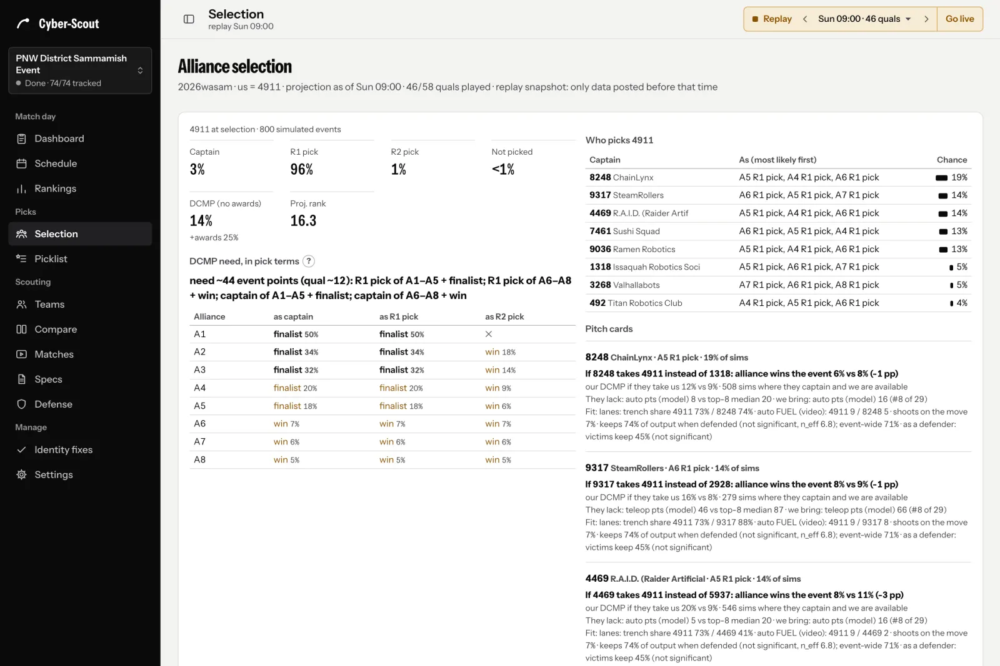
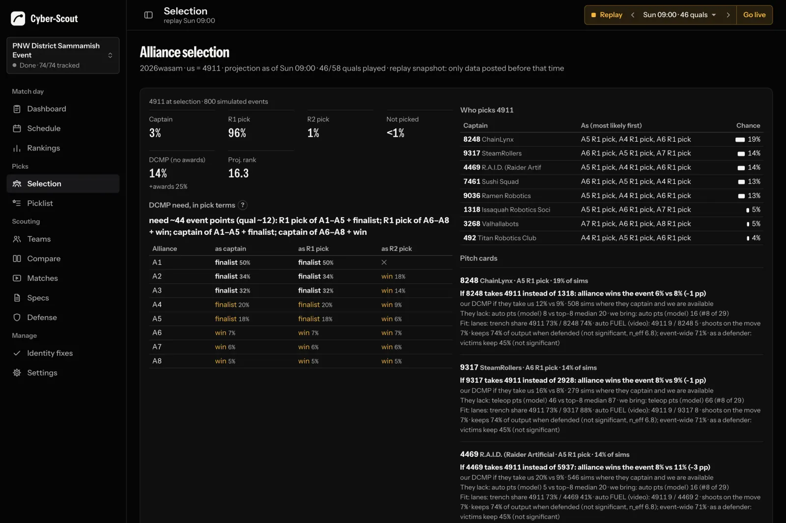
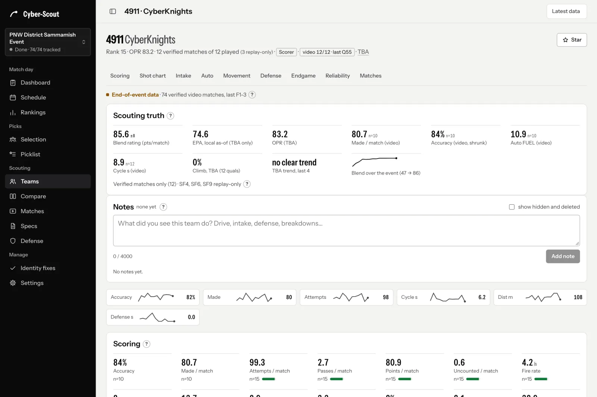
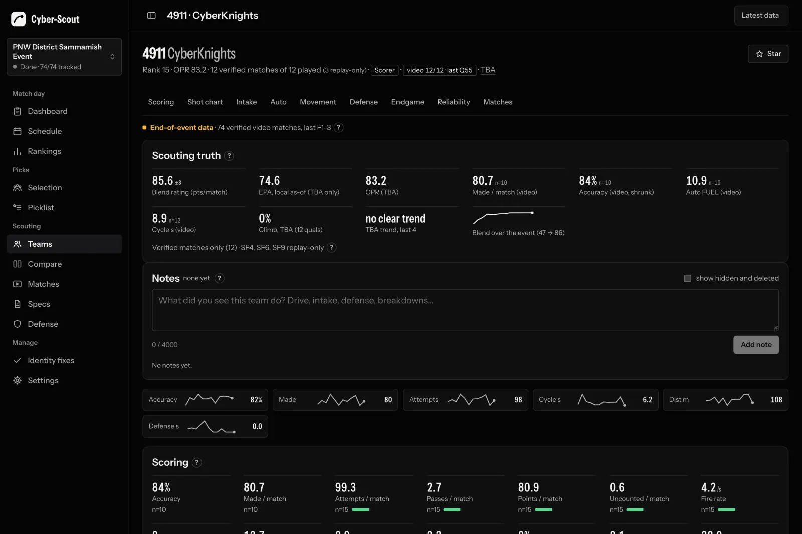
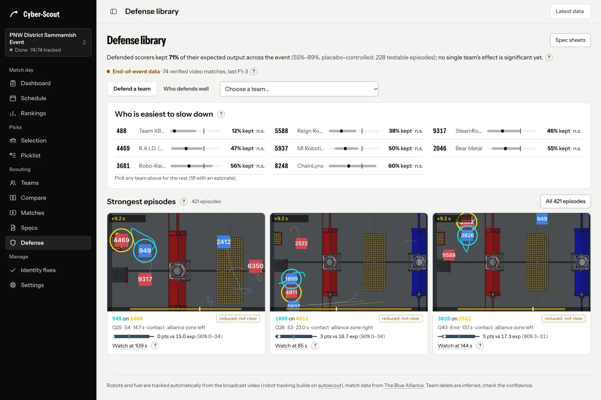
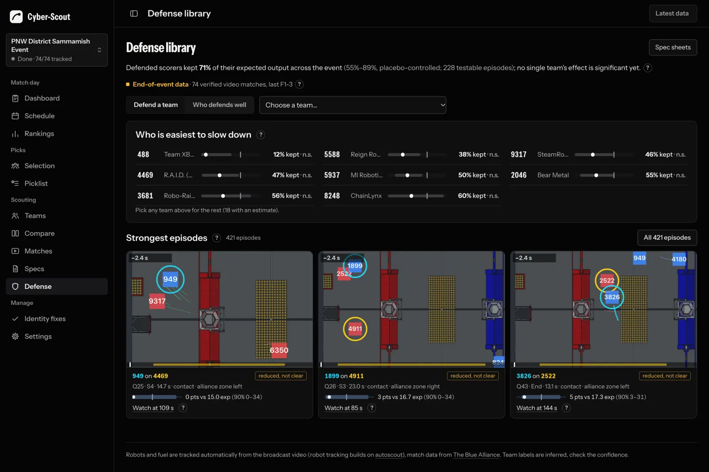
How accurate it is, measured.
All numbers are from one event, PNW District Sammamish 2026 (58 qualification matches), checked against hand labels and The Blue Alliance. They are what we measured, including the parts that are not good yet.
| What | Measured | What it means |
|---|---|---|
| Which robot is which team | 87.6%of samples right, 19 hand-labelled matches | 95.3% of the frames it answers (it abstains on about 8%), 98.9% when its confidence is 0.8 or more. Frames under 0.5 are quarantined: their shots are credited to no team. |
| With station-camera reads | 98.5%of answered frames, up from 95.6% | Optional pass that also reads bumpers from the driver-station insets; measured on the 10-match dev set. |
| Made FUEL vs the official count | 0.91–1.00traced / TBA per alliance, held out | Reconstructed made shots, compared per alliance and period with TBA's hub counts. |
| Shot calls | ~96%shooter attributed correctly | Made calls ~90%. Missed calls only ~60% (missed vs pass 0.83): misses are the weak spot. |
| Floor intakes | ~0.88precision; recall ~0.45 | When it reports a pickup it is usually right, but it sees fewer than half, so intake counts are a floor. |
| District points | 309 / 3092026 PNW team-events exact | Implements the FRC district-points rules; matches TBA on every team-event of the 2026 PNW season. |
Win predictions, scored after the fact
Brier score over 58 quals, each predicted only from matches posted before it. Lower is better.
| Cyber-Scout blend | .1185 |
|---|---|
| Same model, no video | .1333 |
| EPA alone | .1474 |
| Coin flip | .25 |
Blend minus EPA: −.029, 90% interval [−.051, −.009]. What the video adds on its own: −.015, 90% interval [−.036, +.004], which is not significant yet at one event.
What it doesn't know
- Climbs come from TBA's per-robot results, never from video.
- Defense: defended scorers kept 71% of their expected scoring event-wide [56–88%], but none of 39 per-team tests is significant, so every defense effect on the queue card is labelled an assumption.
- Robots whose numbers the OCR never reads get their identity from path linking only, at lower confidence.
- Team numbers use verified matches only; fewer than 3 are shown as anecdotes with the match list.
Sources: the measured-numbers tables in the guide (pipeline and strategy chapters). The dashboard shows a live version of the backtest in its footer, recomputed as results come in.
Made for venue Wi-Fi.
The tracking runs on your server; every laptop and phone keeps its own copy of the event's data. Reading never waits on the network, and changes made offline are sent once, in order, when the connection comes back.
Laptops: Cyber-Scout Client
A small program that serves the same web app from a full local mirror. Syncs only what changed, resumes broken downloads, and keeps an outbox of your notes, picklist edits and fixes.
Phones and tablets
The web app works offline for pages you've opened, and "Save this event for offline" fetches the whole event in one go. A small pill always says whether you're online and what's waiting.
No double edits
Every change carries a unique key, so a change resent after a dropped answer is applied once. Picklist conflicts ask you: keep mine, or take theirs.
Measured with the Client on a deliberately bad link: 600 ms latency, 1 MB/s, first download cut at 3 MB
| First sync of a whole event | Next sync, 5 files changed | Nothing changed | 5 offline notes sent |
|---|---|---|---|
| 27 s 19.8 MB on the wire, resumed without re-downloading |
2.5 s 13 KB |
1.9 s 350 bytes |
4.9 s one answer lost on the way: replayed, not duplicated |
Your server, your team's accounts.
Cyber-Scout runs on a computer your team owns, as four Docker containers. Your data, your Blue Alliance key and your videos stay there. One installer sets it up; a setup wizard does the rest in the browser.
Roles
| viewer | Reads everything: dashboard, teams, matches, picklist. |
|---|---|
| scout | Plus notes on teams and matches, and "wrong team?" fixes, which go to a queue for approval. |
| strategist | Plus the shared picklist, and applies identity fixes directly. |
| admin | Everything: teammates, events, video setup, updates, the activity log with one-click revert. |
- Signed-in only. The data and videos need a session; passwords are argon2id hashes, every change carries a CSRF token, sign-ins are rate-limited.
- Docker and a GPU. An NVIDIA GPU is recommended; CPU-only works, about 4 times slower per match.
- One-click updates. An optional updater backs up, rebuilds, checks health and rolls back by itself if anything fails.
- Every device its own look. Each person picks a theme, light or dark, and a layout on their own device. Try it in the demo's Settings.
- Private by default. Nothing phones home. It reaches out only for match data and video: The Blue Alliance, YouTube, and Statbotics ratings when available.
Get it running.
Start with the demo, then install the server on a team computer and give the Client to your laptops.
Try the demo
The real app with frozen data from PNW District Sammamish, opened at the Sunday 09:00 replay. No sign-in.
Open the live demoInstall the server
Linux, macOS or Windows with Docker. One script, then a setup wizard: admin account, TBA key, team number, events.
Server installInstall the clients
Cyber-Scout Client for Windows, macOS and Linux laptops, and the Android app. No setup beyond your server's address.
Client downloadsBuilt by FRC 4911, the CyberKnights.
We built Cyber-Scout for our own drive team and first ran it at PNW District Sammamish in 2026. Robot tracking builds on autoscout by Sam Liu (MIT): its field-space tracklets, identity solver and smoother are used here.
Field geometry and AprilTag layouts come from WPILib, match data from The Blue Alliance, and the bumper OCR models are PP-OCRv3 (Apache-2.0, via rapidocr_onnxruntime). Much of the code was written with Claude Code. Cyber-Scout is MIT-licensed.